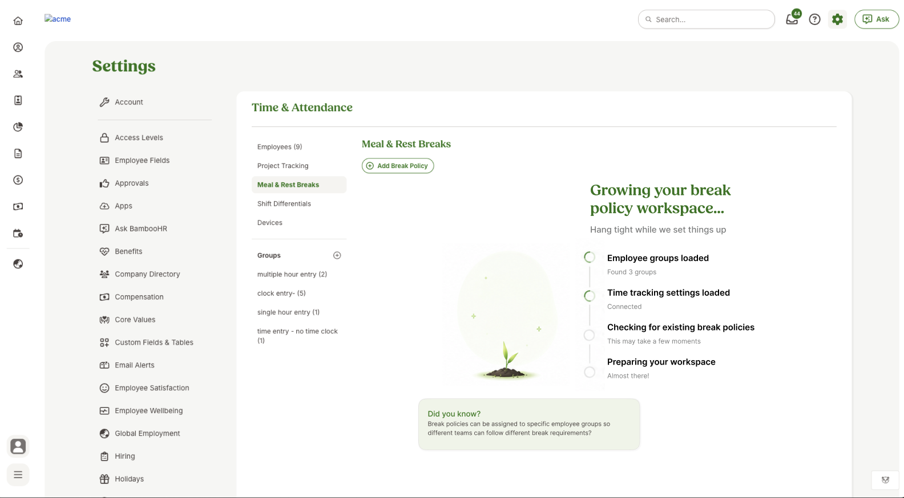
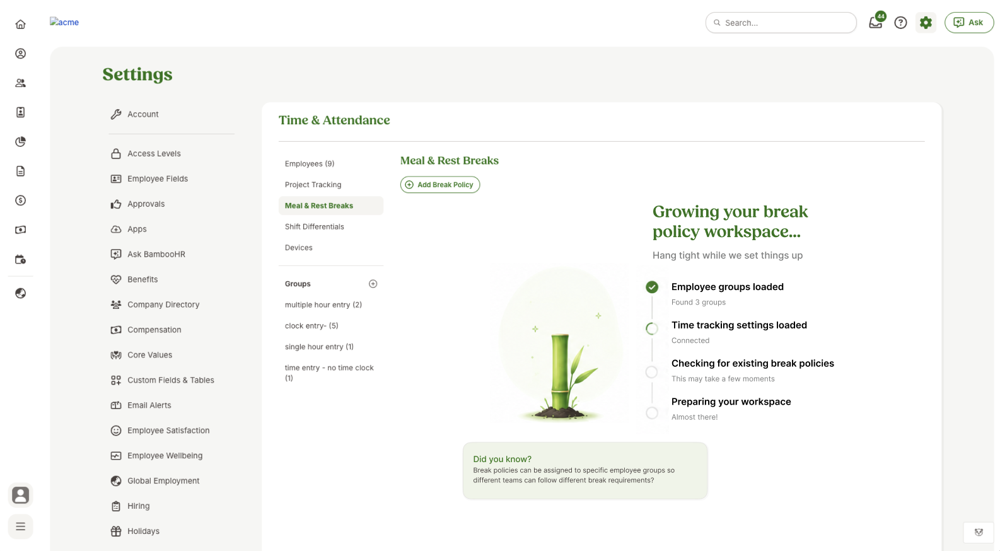
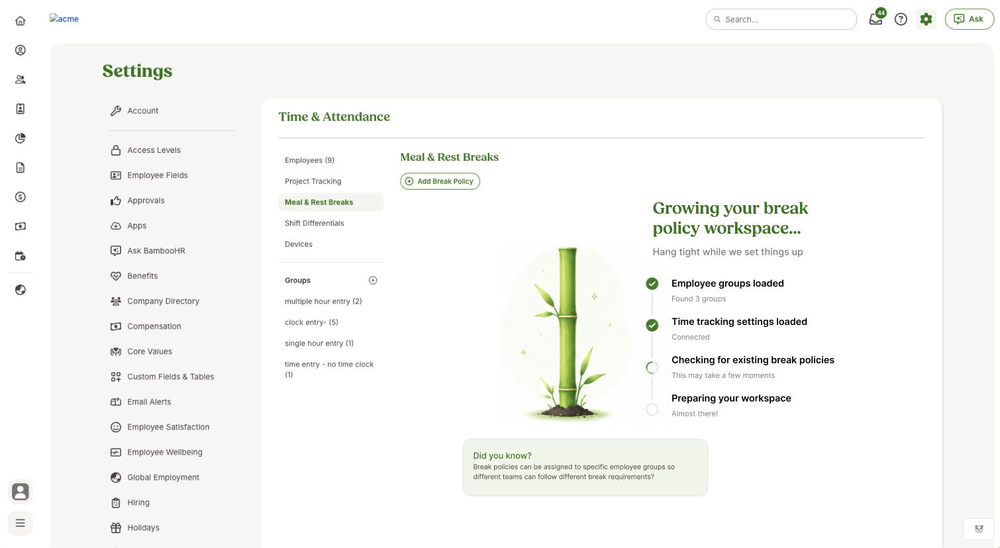
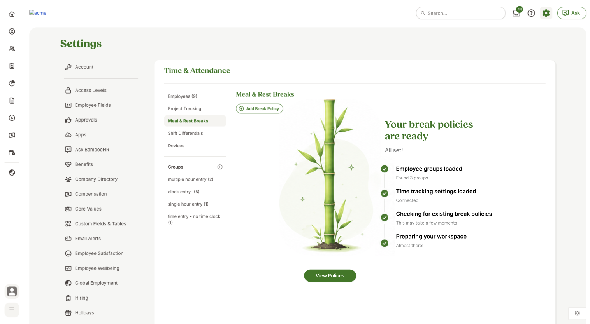
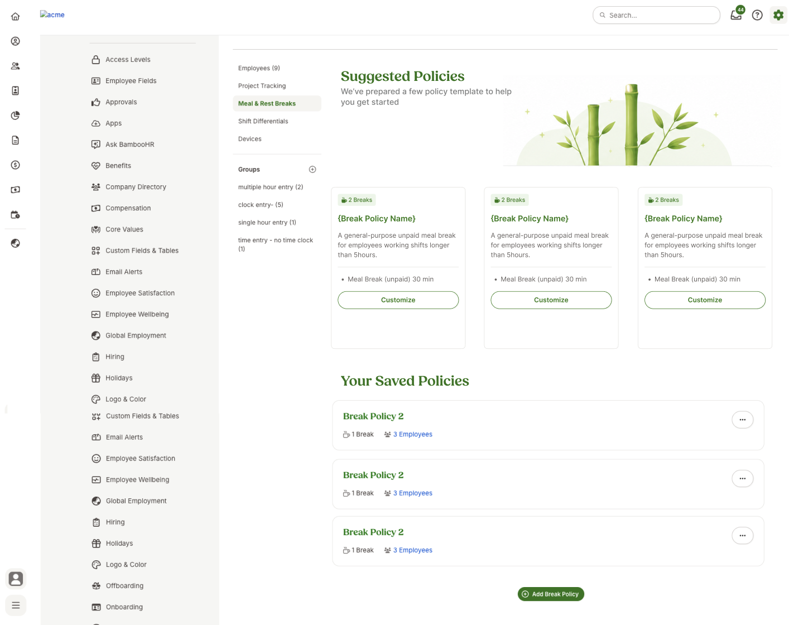

BambooAI Meal and Rest BReak Agent UI





Designed and developed the user interface for an agentic AI system focused on meal and rest break management.
HR administrators were overwhelmed by the amount of information they had to keep track of including employee break requests, meal and rest break management, and more.
Conducting user research and interviews with HR administrators to understand their pain points and needs. I then created a user persona and user journey map to help guide the design of the agentic AI system. I then designed the UI for the agentic AI system in Figma and Claude Code.
The agentic AI system helped HR administrators manage break requests and meal and rest break management more efficiently. And the user engagement while the AI agent was gathering information was high.




